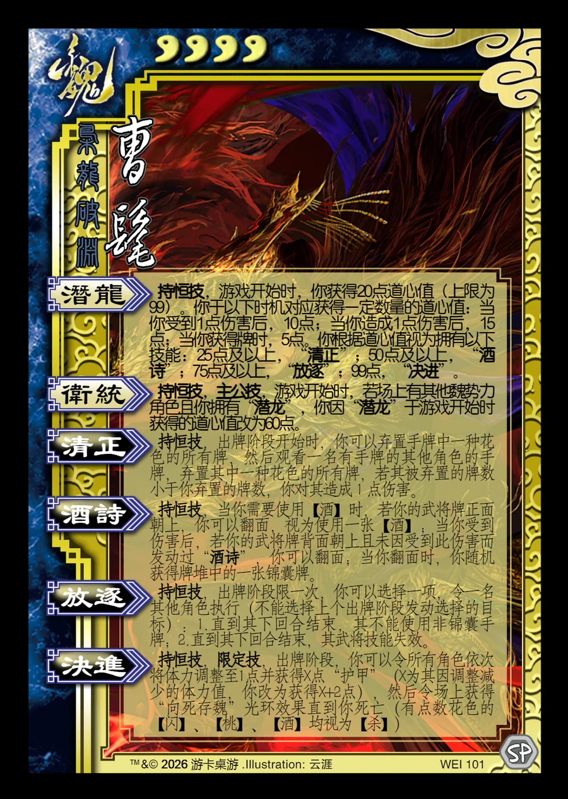

点击卡面查看大图
魏
曹髦
♥4枭龙破渊
潜龙持恒技
持恒技，游戏开始时，你获得20点道心值（上限为99）。你于以下时机对应获得一定数量的道心值：当你受到1点伤害后，10点；当你造成1点伤害后，15点；当你获得牌时，5点。你根据道心值视为拥有以下技能：25点及以上，“清正”；50点及以上，“酒诗”；75点及以上，“放逐”；99点，“决进”。
卫统持恒技主公技
持恒技，主公技，游戏开始时，若场上有其他魏势力角色且你拥有“潜龙”，你因“潜龙”于游戏开始时获得的道心值改为60点。
清正持恒技衍生
持恒技，出牌阶段开始时，你可以弃置手牌中一种花色的所有牌，然后观看一名有手牌的其他角色的手牌，弃置其中一种花色的所有牌，若其被弃置的牌数小于你弃置的牌数，你对其造成1点伤害。
酒诗持恒技衍生
持恒技，当你需要使用【酒】时，若你的武将牌正面朝上，你可以翻面，视为使用一张【酒】；当你受到伤害后，若你的武将牌背面朝上且未因受到此伤害而发动过“酒诗”，你可以翻面；当你翻面时，你随机获得牌堆中的一张锦囊牌。
放逐持恒技衍生
持恒技，出牌阶段限一次，你可以选择一项，令一名其他角色执行（不能选择上个出牌阶段发动选择的目标）：1.直到其下回合结束，其不能使用非锦囊手牌；2.直到其下回合结束，其武将技能失效。
决进持恒技限定技衍生
持恒技，限定技，出牌阶段，你可以令所有角色依次将体力调整至1点并获得X点“护甲”（X为其因调整减少的体力值，你改为获得X+2点），然后令场上获得“向死存魏”光环效果直到你死亡（有点数花色的【闪】、【桃】、【酒】均视为【杀】)